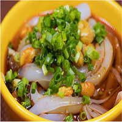
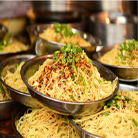
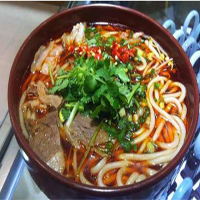
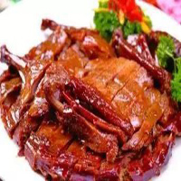

|
||||||
| 南充美食 |

川北凉粉川北凉粉发源于清末民初的四川省南充市，原为农舍小食，现已成为川菜代表性汉族特色著名小吃之一。川北凉粉是采用优质豌豆去壳，用水浸泡后，磨成细浆，然后过滤去渣，沉淀脱水，制成豆粉。再经加热搅拌成糊状，装入盆、盘待用。凉粉制作法有很多种，可以用绿豆、大米等做出不同味道的凉粉区别，及营养价值与凉粉的影响。

营山凉面营山凉面是四川南充的传统特色小吃，有着非常悠久的历史，营山凉面选用面条为主要原料，再配以各种调料，搅拌均匀，所制作出来的凉面麻、辣、咸、香四味兼备，清凉爽口，曾获得第十九届中国西部商品交易会“知名畅销产品(小吃)”殊荣。

顺庆羊肉粉顺庆羊肉粉是四川南充的传统特色小吃，有着非常悠久的历史，其制作工艺十分精细，选用优质的羊肉粉为主要原料，来用传统的制作方法制作而成，所制作出来的羊肉粉米粉质细。绵软。馅味清香无腥膻，汤色乳自而滚烫。

营山板鸭营山板鸭是营山独具特色的烧腊制品。在埋没千年以后，直到清代方名噪天府，民国以后，驰名远近。 它色泽金黄，清香味美，咸淡适口，物美价廉，已成为人们日常生活中款待宾客的佳肴，也是馈赠亲朋具有独特风味的名土特产品，因而驰名成、渝，远销省内外。
|
| 图片文字均源自网络，侵权必删 |